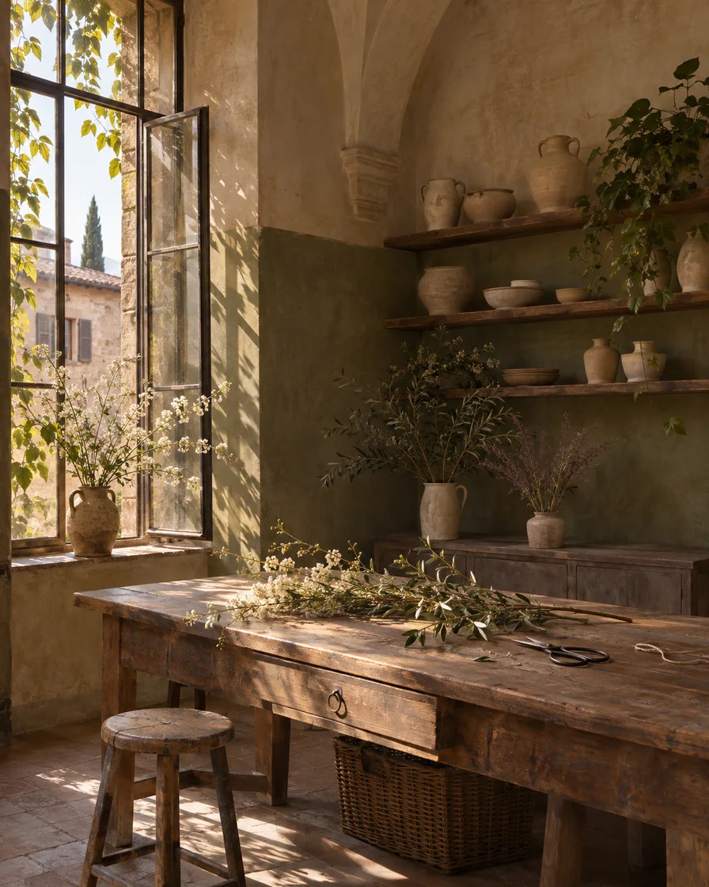

Seguire la stagione
In estate ci attirano le spighe mature. In inverno osserviamo le linee dei rami spogli e i pochi fiori che si aprono nel freddo.
Chi siamo
Foglie a mezzavoce è un atelier botanico immaginario. Lo abbiamo pensato come una stanza con un grande tavolo, una finestra e il tempo di osservare un ramo da più lati.
Sito dimostrativo · Progetto personale

Sul tavolo, una foglia d’ulivo mostra due verdi diversi. Basta voltarla perché il lato più chiaro prenda luce. Il nome viene da gesti così piccoli: spostare uno stelo, girare il vaso, accorgersi di un’ombra che prima sfuggiva.
In estate ci attirano le spighe mature. In inverno osserviamo le linee dei rami spogli e i pochi fiori che si aprono nel freddo.
Una foglia lucida accanto alla ceramica opaca cambia aspetto. Anche il lino e la carta ci aiutano a vedere meglio il profilo di uno stelo.
Guardiamo il vaso da lontano. Se due rami si confondono, ne spostiamo uno finché la luce riesce a passare tra loro.
Dal primo ramo sul tavolo all’ultimo spazio lasciato tra gli steli.
Apri il quaderno